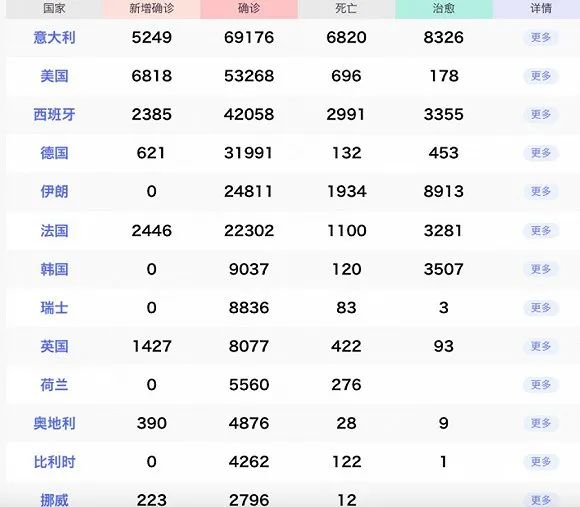

全球累计超24万、意大利病亡数居首，美大选日程受影响
原文链接 备份链接 图片来源：Kyodo News “ 全球新冠肺炎疫情播报，持续更新。 ” （本文持续更新中。文中段首所示时间为本文更新时间。） 全球 0800【全球疫情汇总】 据新浪实时统计，截至3月20日8点，除中国（包括港澳台地 …
 图片来源：Kyodo News
图片来源：Kyodo News
“
全球新冠肺炎疫情播报，持续更新，文中段首所示时间为本文更新时间。
”
08：00【全球疫情汇总】
据新浪实时统计，截至3月25日8点，除中国（包括港澳台地区）以外，海外新冠肺炎累计确诊333214例，死亡15389例，治愈30278例。

注：新增0表示当天暂未宣布数据。数据来源：新浪
08：00【约翰斯·霍普金斯大学：全球新冠肺炎确诊病例超过40万例】
美国约翰斯·霍普金斯大学24日发布的最新数据显示，截至美国东部时间24日13时30分（北京时间25日1时30分），全球新冠肺炎确诊病例超过40万例，达到407485例。全球死亡病例达18227例。
数据显示，除中国以外，确诊病例过万的国家有意大利、美国、西班牙、德国、伊朗和法国。疫情已波及全球160多个国家和地区。
08：00【世卫组织：全球195个国家地区出现病例】
世卫组织实时统计数据显示，截至欧洲中部时间3月24日18时（北京时间3月25日1时），全球确诊新冠肺炎375498例，死亡16362例，目前全球已有195个国家地区出现新冠肺炎病例，中国以外新冠肺炎确诊近30万例。
08：00【外媒数据显示：全球新冠肺炎确诊病例从100到10万经历47天，如今每新增10万例只需3天】
08：36【美国新增确诊病例超万例，六成新增来自纽约地区】
据美国约翰斯·霍普金斯大学实时监测系统统计，截至美东时间3月24日18点47分（北京时间25日6点47分），美国已至少有新冠肺炎确诊病例53660例，其中包括死亡病例703例。与24小时前相比，新增确诊病例10446例，新增死亡170例，为疫情暴发以来美国单日死亡病例数最高的一天。
08：00【美国新冠肺炎确诊病例升至50206例，死亡606例】
美国约翰斯·霍普金斯大学24日发布的最新数据显示，截至美国东部时间24日15时（北京时间25日3时），美国新冠肺炎确诊病例升至50206例，死亡606例。
根据数据，纽约州确诊病例最多，为25665例；新泽西州确诊病例2844例；加利福尼亚州确诊病例2267例。
08：00【美国首都华盛顿关闭一切非基本商业活动】
08：00【特朗普：希望在4月12日重新开放美国经济活动】
美国总统特朗普24日在白宫表示，他希望在4月12日(复活节)重新开放美国经济活动，放宽因应新冠肺炎疫情所采取的限制措施。
特朗普当天在白宫玫瑰园接受福克斯新闻频道直播访谈时作上述表示。他说，不希望疫情防控措施造成的影响比疫情本身更严重。“美国每年因流感死亡数千人，交通事故造成的遇难人数更多。我们必须回去工作。”
08：00【美国“罗斯福”号航母三名水兵确诊感染新冠病毒】
这是美国海军首次在执行任务的军舰上发现确诊病例。“罗斯福”号载有约5000名乘员，该舰15天前曾停靠越南岘港。
08：00【哈佛大学校长及妻子新冠病毒检测呈阳性】
据哈佛大学官网的数据，截至24日，哈佛大学已有18名人员新冠病毒检测结果呈阳性。
08：00【意大利单日新增死亡病例743例，新增确诊5249例】
根据当地时间3月24日18时意大利卫生部公布的最新数据，意大利现有新冠病毒患者54030例，死亡6820例，治愈8326例，累计确诊感染新冠病毒总人数为69176例。
08：00【意大利向奥地利转移5名新冠肺炎患者】
据悉，5名患者中有3人会被转移到奥地利林茨市医院的重症监护室里，另外2人则会被转移到因斯布鲁克大学医院。而作为交换，意方将把一部分来自中国的防护物资送给奥地利。此前意大利已向德国转移多名重症患者。
08：00【意大利加大疫情防控惩处力度，随意外出最高罚款3000欧元】
意大利内阁通过新疫情防控法令，规定国家紧急状态持续至7月31日，期间疫情防控法令可进一步调整；违反防控措施的行政罚款额度从以前的206欧元提高到400-3000欧元；违反法令从事商业活动，将被强制关停经营场所5-30天。
08：00【法国新冠肺炎病例突破2万例】
法国卫生总署署长热罗姆·萨洛蒙在24日的新闻发布会上通报说，截至当日法国累计确诊新冠肺炎病例22300例，较昨日新增2444例。其中新增死亡240例，累计死亡1100例，住院10176例，治愈3201例，重症2516例。
08：00【西班牙累计确诊病例达42058例，死亡2991例】
新增确诊病例2173例，死亡182例。
08：00【德国累计确诊32991例，死亡159例】
08：00【奥地利新增952例新冠肺炎确诊病例，累计确诊4876例】
08：00【英国新增1427例新冠肺炎感染者，累计8077例】
新增死亡87例，累计死亡422例。这也是英国发现病例以来死亡人数最高的一天。
08：00【英国版方舱医院准备建设 将招募多达25万名志愿者】
3月24日，英国宣布将把位于伦敦东部的“ExCel”会展中心改建为临时医院，用来收治新冠肺炎患者。英国将这座临时医院命名为“南丁格尔医院”，由军方和国家医疗服务体系（NHS）共同管理，最初将提供500张配备呼吸机和氧气设备的床位，饱和时可收治4000名患者。
临时医院的医疗团队将包括医护专业的学生和退休返岗的医护人员。此前，英国发出倡议，呼吁离岗三年内的医护人员重返一线。汉考克称，目前已有近1.2万人进行了回应。
08：00【北约驻立陶宛营有8名士兵确诊】
2017年2月起，来自德国、比利时、荷兰和挪威共1200名军人组成北约驻立陶宛营，由德国承担驻军指挥责任。
08：00【波兰发布“禁足令”，禁止两个人以上的集会】
08：00【澳大利亚新冠肺炎感染病例2317例，最小病患仅出生两个月】
08：00【智利新增176例新冠肺炎病例，政府加紧建设“方舱医院”】
08：00【巴西确诊病例2201例，里约及圣保罗两市停止非必要商业活动】
截至当地时间3月24日16时，巴西全国共有新冠肺炎确诊病例2201例，死亡病例46例，比前一日上涨35%，死亡率也随之上涨至2.1%。
08：00【印度将全国封锁21天，民众连夜排队购买物资】
印度总理莫迪宣布，从25日0时开始在全国范围内实行彻底封锁，为期21天。
08：00【沙特：不遵守疫情防控规定将处罚款百万，监禁五年】
沙特政府从23日起实施晚7时至早6时的宵禁。对于违反宵禁规定外出活动并将相关行为拍摄录制上传至社交网络的行为，将最高处以5年监禁和300万沙特里亚尔（约80万美元）罚款。
08：00【利比亚确诊首例新冠肺炎病例】
08：00【纳米比亚确诊升至7例，宣布实行针对所有国家的30天旅行禁令】
08：00【南非航空公司将暂停所有国内航班】
未经授权 禁止转载

原文链接 备份链接 图片来源：Kyodo News “ 全球新冠肺炎疫情播报，持续更新。 ” （本文持续更新中。文中段首所示时间为本文更新时间。） 全球 0800【全球疫情汇总】 据新浪实时统计，截至3月20日8点，除中国（包括港澳台地 …
原文链接 备份链接 【财新网】 纽约市长白思豪（Bill de Blasio）宣布，纽约市将从美东时间3月17日上午9时起，暂停夜店、影院、小剧场和演出场所的营业，用餐场所只允许外卖和送餐。除此之外，纽约市还宣布将从3月16日起关闭市内所 …
原文链接 备份链接 记者：肖恩 “ 全球新冠肺炎疫情播报，持续更新。 ” （本文持续更新中，点击左下角阅读原文追踪最新进展。文中段首所示时间为本文更新时间。） 全球 0800【全球疫情汇总】据新浪实时统计，截至3月16日8点，除中国（包括 …
原文链接 备份链接 图片来源：Kyodo News “ 全球新冠肺炎疫情播报，持续更新。 ” （本文持续更新中，点击左下角阅读原文，实时跟踪国际疫情动态。文中段首所示时间为本文更新时间。） 全球 0800【全球新冠肺炎累计病例数已突破15 …
原文链接 备份链接 现在欧洲应该是下决心防疫的时候了 3月3日，在意大利布雷西亚，医务人员在医院外搭建的帐篷中工作。图/新华 在欧洲疾病预防控制中心（ECDC）公布的《COVID-19在欧盟/欧洲经济区和英国的地理分布》图上，象征新冠 …